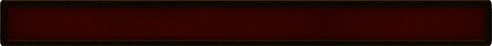
Eastern Sun Resurrected is a complete
reimagining of Diablo II Resurrected, built
upon the foundation of the
classic Eastern Sun mod and expanded far beyond. Explore a world where every item has been overhauled,
most
skills have been rebalanced or replaced with custom ones, and the campaign has been redesigned to be
more
engaging. Push past level 99 into a complex endgame filled with brutal uber encounters, brand new items,
and
progression up to level 110. Delve into an extremely complex crafting system with new reagents, powerful
anointments, and risky corruptions. Finally, shape your build by ascending into one of 15 unique
ascendancy
classes, each offering distinct playstyles and itemization paths.
Rebalanced Skill System
Nearly all skills in the mod have been redesigned to provide unique
functionality, improved scaling, and
stronger endgame viability. Redundant or underused abilities were replaced or reworked to introduce
new
mechanics or simply to make them better compared to their legacy counterparts. Several abilities
feature
unique mechanics that alter how they're used in combat. The goal is to make every skill feel
purposeful
and competitive.
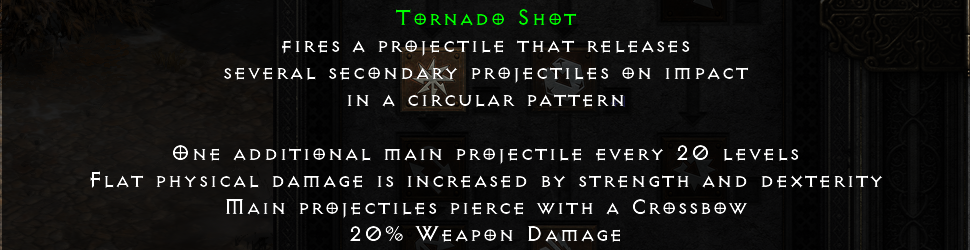
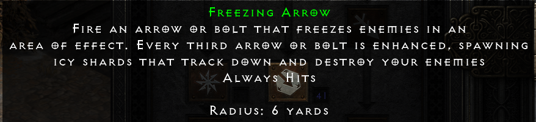
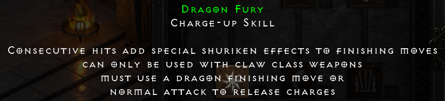
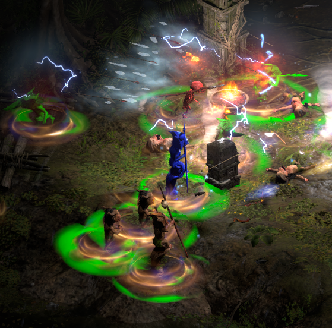
Overhauled Campaign Difficulty
Most monsters in the game have been rebalanced or redesigned to provide a more challenging and
engaging
experience throughout the campaign. Enemy stats, AI behavior, and skill usage were reworked to
provide a
more challenging experience. The endgame features entirely new enemies with custom abilities that
are
significantly tougher than campaign monsters.
New Endgame System
The endgame revolves around a map-based system that provides extensive replayability. Maps are
consumable items that open high-level zones with randomized layouts and increasing difficulty. Each
tier
offers incresingly better rewards as well as increasingly harder boss fights, some of which drop
special
rewards. The system provides a repeatable endgame grind to obtain the new level 110 cap.
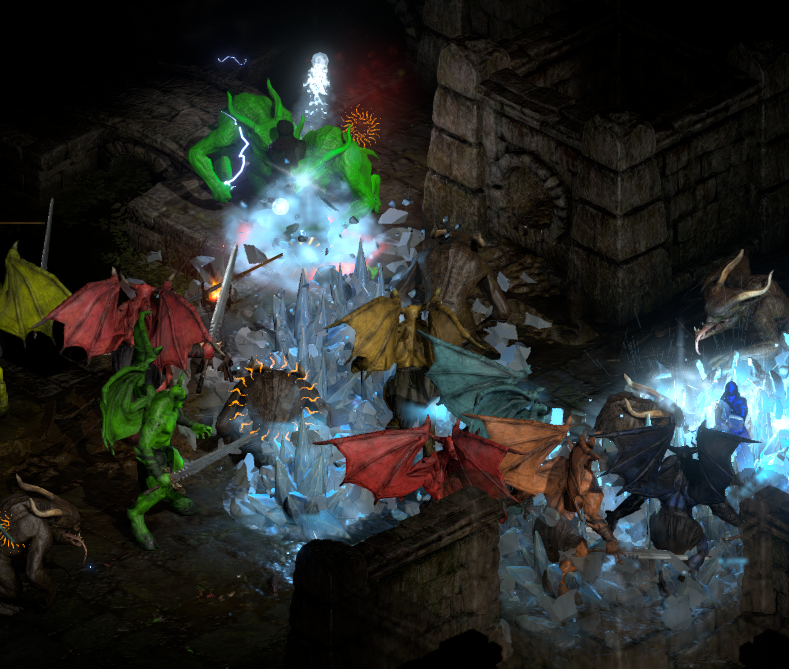
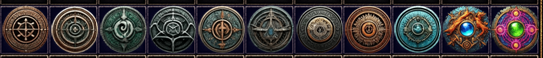
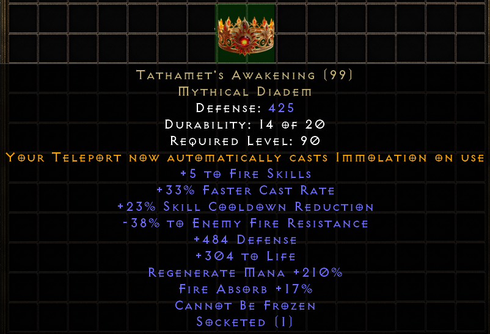
Mythical Uniques
Mythical Uniques are a new tier of powerful endgame items designed to redefine builds and introduce
entirely new playstyles. Each item comes with exclusive affixes or mechanics not found on any other
gear, often altering skill behavior, scaling, or core character interactions. Unlike standard
uniques,
these items are extremely rare and can drop exclusively from the new endgame maps.
Ascendancies
The Ascendancy system introduces powerful subclass specializations that fundamentally change how
each
class is played and itemized. After completing specific challenges, players can choose one of
several
ascendancies, each offering unique bonuses. Ascendancies are designed to extend build diversity,
allowing players to tailor their characters around specific stats and/or mechanics.
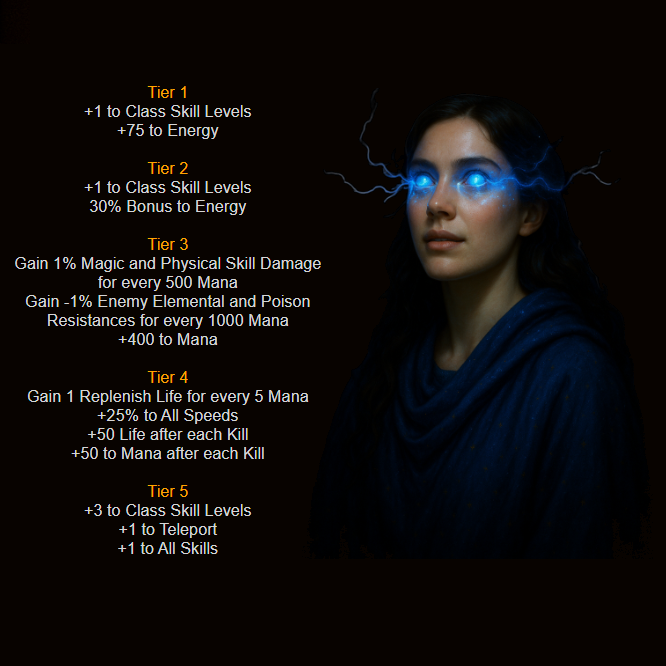
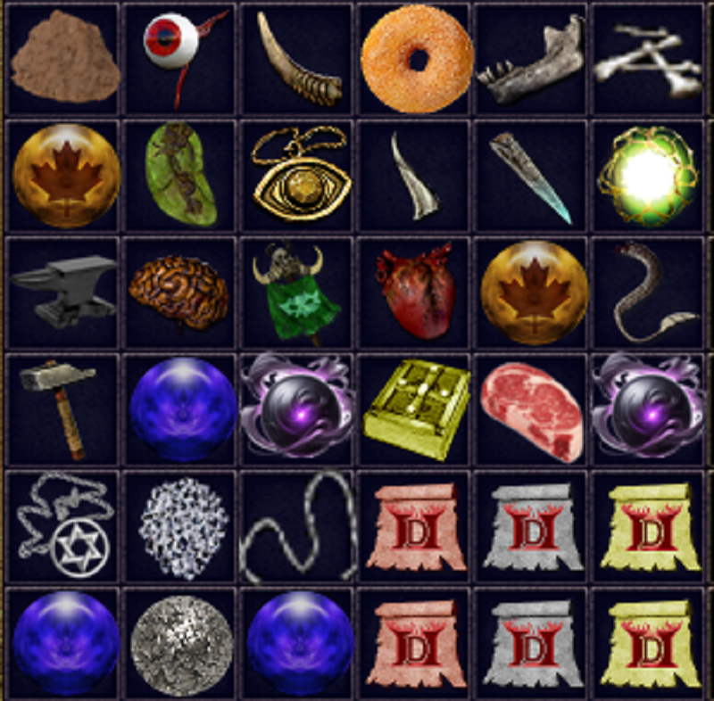
Crafting System
Eastern Sun Resurrected features one of the most complex crafting systems found in an ARPG with
hundreds
of unique recipes. Most recipes are repeatable and can be combined, allowing players to refine,
upgrade,
or entirely transform items across multiple steps. The system includes forging, rerolling, adding
new
affixes, socket control, "dragon stoning" and many more.
New Crossbow Mechanics
In classic Diablo II, crossbows were largely inferior to bows in both speed and versatility. In
Eastern
Sun Resurrected, crossbows have been fundamentally reworked. All crossbows now feature a base reload
time that can be lowered with attack speed, during which you cannot attack. To compensate, crossbows
deal significantly higher damage per shot. This bonus damage applies to elemental as well as
physical attacks.
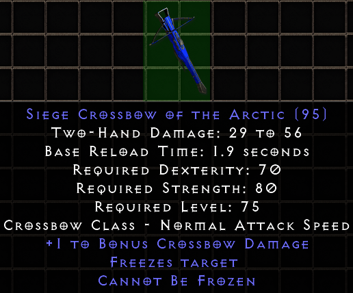